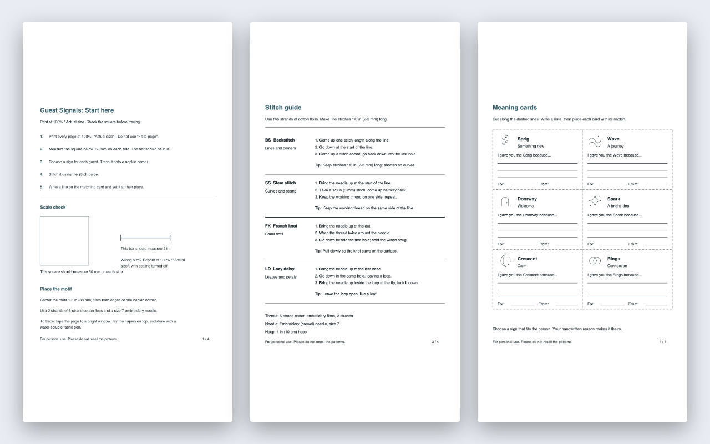
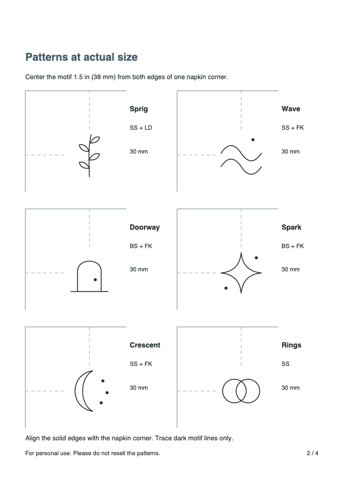

Sprig
Something new
Stem stitch (SS) + Lazy daisy (LD)
Printable napkin embroidery patterns
Hand-stitch a different symbol on each cloth napkin, then add a card that tells your guest why you chose it.
No email needed — opens a printable page. The free Rings pattern includes a matching card, so you can finish one place setting before deciding on the full set.
Rings · Connection


Six guests, six meanings
Each line drawing fits inside a 30 × 30 mm (about 1.2 × 1.2 in) box on the printed pattern sheet. The small motif on each card helps pair it with the right napkin.
Something new
Stem stitch (SS) + Lazy daisy (LD)
A journey
Stem stitch (SS) + French knot (FK)
Welcome
Backstitch (BS) + French knot (FK)
A bright idea
Backstitch (BS) + French knot (FK)
Calm
Stem stitch (SS) + French knot (FK)
Connection
Stem stitch (SS)
The previews show printable PDF pages, not photos of finished embroidery. The physical stitch trial is still pending.
How it works
Choose A4 or US Letter, print at 100%, and check the 50 mm (about 2 in) square before tracing.
Use the guide to place the sign's center 38 mm (1.5 in) from both edges of a napkin corner. The guide covers backstitch, stem stitch, French knot, and lazy daisy, with steps and a tip for each.
Cut out the matching card and complete a line such as “I gave you the Rings because…” by hand.
You supply cloth napkins, floss, needle, hoop, printer, and transfer pen. Basic hand-stitching ability helps.
Free to full set
| What you get | Free Rings sample | Guest Signals · $6 |
|---|---|---|
| Napkin signs | 1: Rings | 6 different signs |
| Meaning cards | 1 matching card | 6 matching cards |
| Printing and stitching help | Actual-size Rings guide, scale check, stem stitch steps | A4 and US Letter PDFs, 4 pages each: start page, actual-size patterns, four-stitch guide, cards |
A digital pattern set, not finished napkins or supplies. The free sample works for one napkin on its own.
The complete download
$6 one time
After purchase, download two PDFs: one A4 and one US Letter. Each has the same four pages. Print the one that matches your paper, check the scale, then stitch and write the cards. Reprint for personal use.
Checkout on Gumroad. Any applicable tax and currency conversion are shown at checkout.
You may give napkins you make as personal gifts, including a housewarming gift.
If the files cannot be accessed, are defective, or substantially differ from the product description, reply to your Gumroad purchase confirmation email within 14 days of purchase. You may choose a working copy or a refund. If you change your mind before downloading, request a refund within 14 days of purchase by replying to that email. After download, change-of-mind refunds are at the seller's discretion. Mandatory consumer cancellation and refund rights in your location still apply; Gumroad may also issue refunds under its platform policy. For other purchase or pattern questions, reply to the purchase confirmation email. Full refund terms.
Occasional updates
Sign up for occasional Guest Signals pattern updates. Unsubscribe from any email.
By signing up, your email goes to Buttondown for these updates. See our privacy policy.